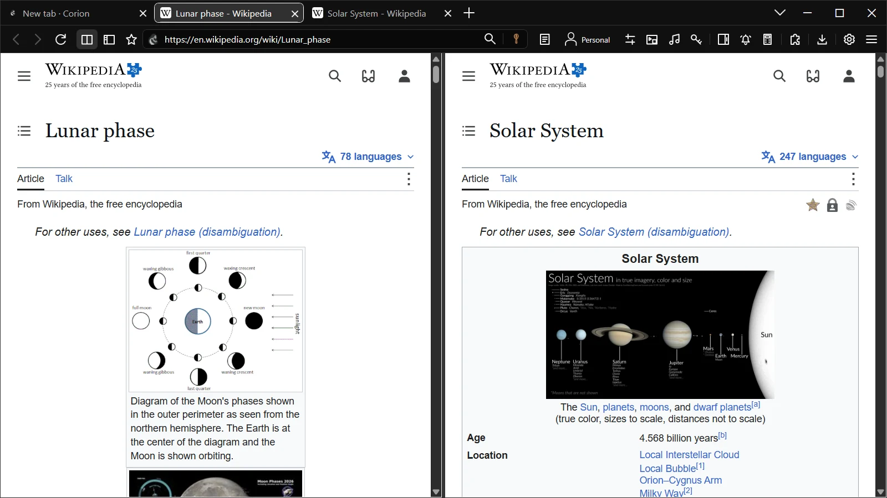

A browser withyou. Make a space for your ideas, your research,
Public release 4.10 · Windows x64 · Free download
YOUR NEXT FAVORITE PLACE ON THE INTERNET 01 / THE EVERYDAY VIEW
Your home Split view Make it yours Private space
Actual Corion product screenshots. Appearance varies with your settings.
LESS FRICTION. MORE FLOW. The web has enough noise. Corion brings your everyday tools together, with a homepage you can make your own and room to keep your work in view.
Find your flow ↗ 01 / MAKE YOURSELF AT HOME A fresh tab. Choose a background. Move the clock. Keep your favorite places close. Corion Mods gives your daily starting point a personal touch.
Explore customization ↗ GOOD MORNING, EXPLORER 09:41 ⌕ Where to next?
Read Create Explore
Illustration of a personalized new tab 02 / KEEP THE BIGGER PICTURE Two sides. Keep a reference beside your work with split view. Capture page notes, connect research, and return to what matters.
Meet your study tools ↗ 
NEW IN 4.0
Small details. A new chapter focused on finding things faster, keeping your workspace together and making everyday browsing feel better.
⌘ One place to start. Press Ctrl+K for actions. Search your bookmarks, notes and saved reading together with Ctrl+Shift+L.
Command palette + library ▥ Pick up your thought. Save named tab arrangements and readable articles. Come back to a project or read your saved text offline.
Workspaces + offline reading ◴ A calmer kind of fast. Choose a performance mode, reduce motion and let eligible inactive tabs sleep while you focus.
Performance + polish 4.10 is an early Windows release. Automatic update delivery is not enabled; download updates from official releases.
Read the release notes ↗ ✳
CLEAR CHOICES. YOUR CONTROL. Know what stays. Separate profiles, isolated private tabs and per-site controls help you manage your browsing. Search and online services still send requests to their providers.
Read how your data is handled ↗ MAKE A LITTLE SPACE FOR SOMETHING NEW Your next tab Get Corion for Windows ↗ Windows x64 · Public release 4.10 · Early development